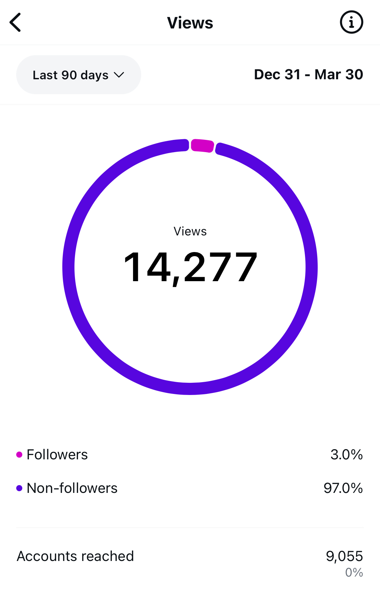
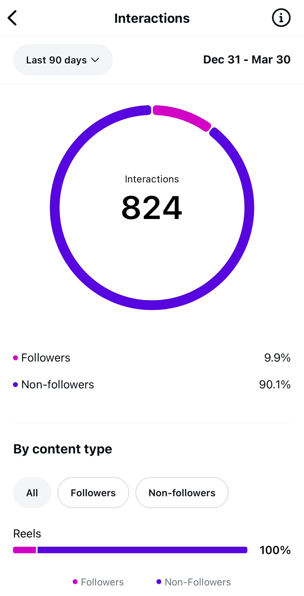
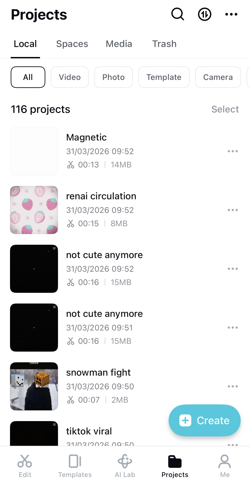
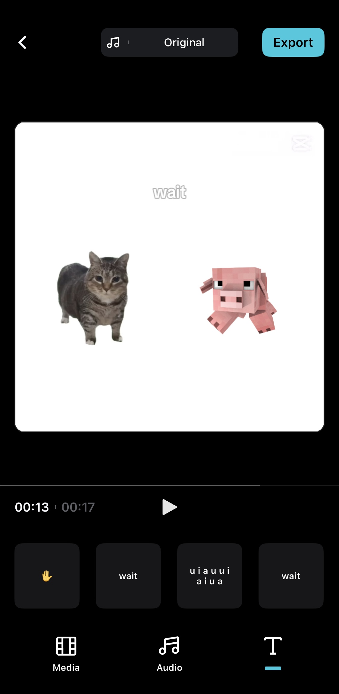
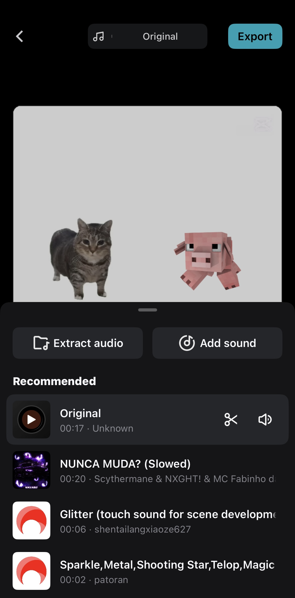

Project 1: Stupidness
01. Archive
Producing over 100 videos to track and document user engagement.



02. Production
Minecraft asset creation, TTS audio compilation, adding subtitles in a video editor.



Project 2: Incompleteness
01. Early Prototype
Initial concept implementation focusing on drawing and color matching
02. Mid Stage Development
Implementing core gameplay and interactive HSL logic before design overhaul
03. Late Stage Refinement
Iterating on visual aesthetics, UI components, and fine tuning scoring algorithms
04. Final Color Arcade
Completed modifications with game difficulty, global rankings, and profiles